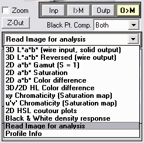
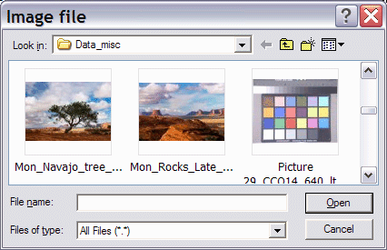
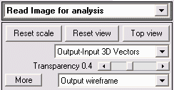

|  |
Gamutvision™ can analyze how image colors change when they are mapped to different color spaces or sent to an output device such as a monitor or printer. A variety of displays are available, including 2D pseudocolor plots and 3D L*a*b* vector plots.
To read an image into Gamutvision, click on the arrow to the right of the Main display selector, shown on the left, and select Read image for analysis. This opens standard Windows file selection dialog box, labeled Image file. |
Select an image file to open. You may, if you wish, press View (), Thumbnails to see thumbnails in the dialog box (illustrated on the right). This is sometimes helpful for locating the file to open.
You will need to select Read image for analysis each time you want to open an image. |
 |
The most recently selected display appears.
2D Image color difference display
Here is an example, showing a 2-Dimensional pseudocolor plot of Delta-C*CMC (ΔC*CMC ) for the image mapped from sRGB to the Epson R2400 (SPR2400 EnhMatte BstPhoto.icc with Colorimetric rendering intent with Black Point Compensation on). This example uses a photograph taken in Paris by Virginia Bonesteel.

This pseudocolor display shows one of several perceptual measures of image color difference before and after gamut mapping. It contains far more information than the gamut warnings of image editors, which merely tell you that a color is outside the gamut of the output device, but give no indication of how much change to expect.
The Display options area, located on the right of the Gamutvision window, contains the following controls.
 Display/Color metric, selected in the upper popup menu, determines the type of display. Choices (shown on the right) include Display/Color metric, selected in the upper popup menu, determines the type of display. Choices (shown on the right) include
- Color difference metrics ΔE*ab, ΔC*ab, ΔE*94, ΔC*94, ΔE*CMC, and ΔC*CMC. ΔC* color difference metrics are similar to the corresponding ΔE metrics, except that they omit the difference in Luminance (ΔL*). ΔE metrics tend to become very high in dark regions, especially for matte papers, which have relatively low Dmax, for example, 1.61 estimated from the profile for Epson Enhanced Matte. Equations here.
- ΔL*, ΔChroma (ΔC*), Δ|Hue distance| (ΔH*) , and ΔHue angle (in degrees). Chroma C* and Hue H* are obtained by converting a* and b* from rectangular to polar coordinates.
- L* (input and output) and Chroma C* (input and output). An interesting application of L* is found in the Smudged pine mystery.
- The input and output images mapped to the monitor color space can also be displayed. The output image mapped to the monitor color space is identical to the soft proof in image editors.
- You can also select 3D L*a*b* image color difference displays, described below.
|
|
Delta-E*ab
Delta-C*ab
Delta-E*94
Delta-C*94'
Delta-E*CMC
'Delta-C*CMC
Delta-L*
Delta-Chroma
Delta-|Hue distance
Delta-Hue angle
L* (input)
L* (output)
Chroma (input
Chroma (output)
Input > Monitor
Output > Monitor
Input 3D cluster
Output 3D Cluster
'Input-Output 3D Vectors
Output-Input 3D Vectors |
- The color map (2D color difference plots only) is selected in the lower popup menu. The map shown, WYRMBK (White-Yellow-Red-Magenta-Blue-Black) goes from white to black through a range of light to dark colors. It offers an intuitive light-to-dark progression and good value discrimination. Other color maps have different properties.
- Probe (2D plots only) turns on the probe. When the probe box is checked, crosshairs appear in the Gamutvision window, and the error metrics shown below are displayed beneath the image for the location where the left mouse button is clicked. You can also click on the preview image on the upper-right. Input and output colors are shown to the left of the metric:, input on the top and output on the bottom. The probe is turned off whenever you click outside the images.
The probe displays
- Input and output L*a*b* values
- ΔE*ab, ΔC*ab, ΔE*94, ΔC*94, ΔE*CMC, ΔC*CMC
- ΔL*, ΔChroma (ΔC*), Δ|Hue distance| (ΔH*), and ΔHue angle (degrees)

- The Invert checkbox (2D color difference plots only) inverts the direction of the color map. It is useful for metrics like ΔChroma, which is mostly negative.
3D Vector image color difference display
The four display selections at the bottom of the Color metric popup menu are not, strictly speaking, color differences. They display color changes between input and output images in 3D L*a*b* space.
- Input 3D cluster displays input colors as dots or circles, where larger circles indicate a greater frequency of the color.
- Output 3D cluster displays output colors as dots or circles.
- Input-Output 3D vectors displays vectors connecting the input and output colors as well as output (inner) colors as dots or circles.
- Output-Input 3D vectors displays vectors connecting the input and output colors as well as input (outer) colors as dots or circles. Shown on the right.
A semitransparent wireframe of the output color space (after gamut mapping) is also shown in this display. A great may display options are available.
|
|
- Displays can include Vectors only (no wireframe), Output wireframe, and input wireframe (in addition to the cluster and vector plots).
- The wireframe transparency can be adjusted from totally transparent (1) to opaque (0).
- The wireframe line color, face color, and the background color can be changed in the Dialog box that opens when you press the More button.
The algorithm for this display is quite complex: it involves reducing tens or hundreds of thousands of image colors to a manageable number. Essentially, the L*a*b* coordinates are transformed into spherical coordinates centered at L* = 50 and a* = b* = 0. The sphere is divided into segments of approximately equal area, each of which is filled with the image color with maximum radius.
The Display options area for the 3D L*a*b* plots are different from the 2D plots.
- Reset scale resets the scale to fit the current display. When different mappings or wireframes are selected the scale is expanded to fit the display. The scale remains expanded to facilitate visual gamut comparisons until Reset scale is pressed.
- Reset view restores the original viewing angle.
- Top view shows the view from the top (the a*b* plane). Last view appears in this location after Top view has been pressed. Pressing it restores the previous viewing angle.
- Display/Color metric (containing Output-Input 3D Vectors) is the same for 3D and 2D displays.
- Transparency (slider) sets the transparency of the output wireframe. It is only active if the output wireframe is selected. (It isn't active for the input wireframe because it would obscure all data.)
- The lower popup menu contains the following selections.
- Vectors only No wireframe is displayed.
- Input wireframe The input (outer) wireframe is displayed. It is always transparent.
- Output wireframe The output (inner) wireframe is displayed. Transparency can be adjusted. This display has a small bug: Input points (or circles) in front of an opaque wireframe appear to be behind the surface. They display fine when they are on the side. (This could be a glitch in the OpenGL implementation on my computer.)
- More opens the 3D Plot Settings dialog box with several additional display options. This dialog box is also used for 3D L*a*b* gamut plots.
- 3D Plot Axis Setting and the OpenGL checkbox are self-explanatory.
- Background controls the background grayscale level.
- Light (applies only to 3D L*a*b* gamut plots) sets the direction of the illumination..
- Wire frame controls the color of the wire frame.
- Wire frame transparency color controls the grayscale level of the wire frame face when transparency is set below 1 (totally transparent).
- Display Gamut volumes (applies only to 3D L*a*b* gamut plots)
- Reset restores the default settings.
|
 |
The GretagMacbeth™ ColorChecker®
Gamutvision can analyze a simulated GretagMacbeth ColorChecker, derived from L*a*b* D65 data supplied by GretagMacbeth. This data is transformed to the input color spaces (1 and 3). Display selections are identical to Image color analysis, described above.
ΔE94 pseudocolor plot
Adobe RGB to Epson 2200 Enhanced Matte, Colorimetric intent |
 |